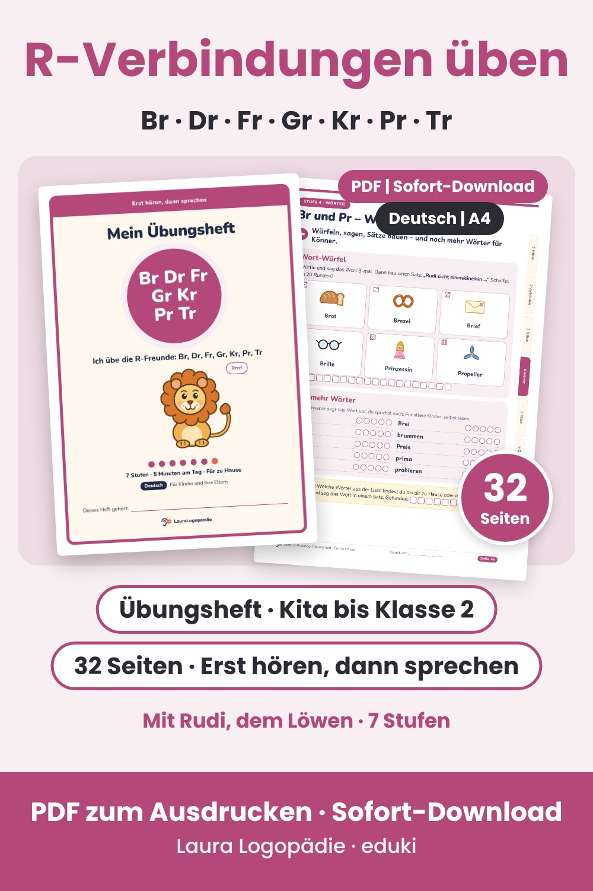
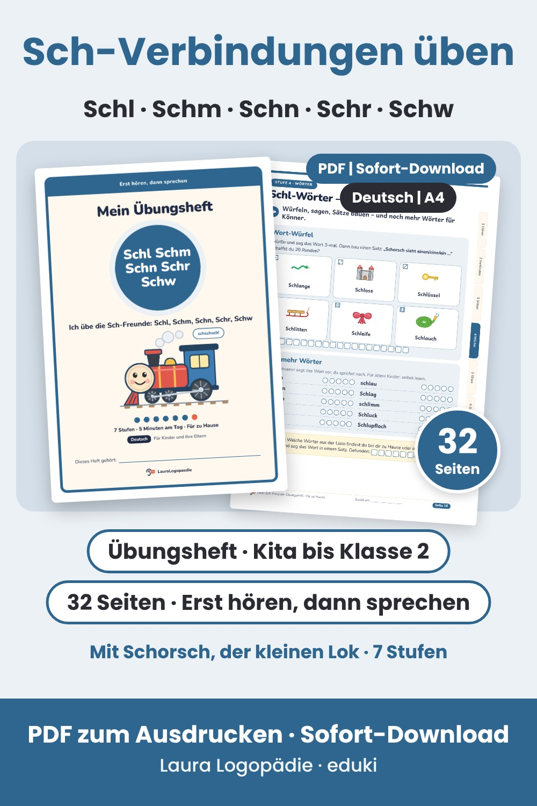
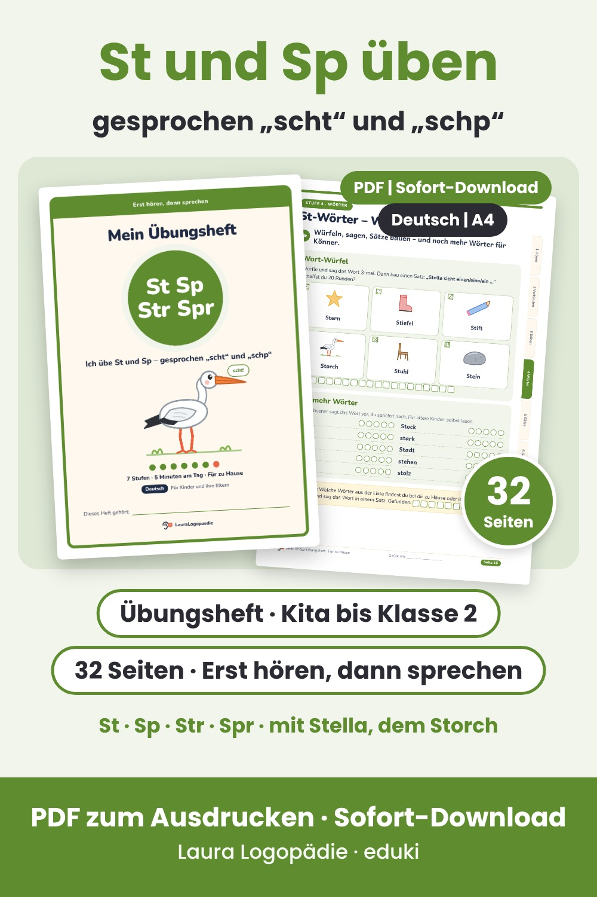

L-Verbindungen üben: Bl, Fl, Kl, Gl, Pl
Übungsheft zu den L-Freunden Bl, Fl, Kl, Gl und Pl für Kinder, die bei diesen Verbindungen noch einen Laut weglassen („Bume“ statt „Blume“). 7 Stufen, 32 Seiten als PDF zum Ausdrucken.

R-Verbindungen üben: Br, Dr, Fr, Gr, Kr, Pr, Tr
Übungsheft zu den R-Freunden für Kinder, die bei diesen Verbindungen noch das R weglassen („Bot“ statt „Brot“). Mit Rudi, dem Löwen – 7 Stufen, 32 Seiten als PDF zum Ausdrucken.

Sch-Verbindungen üben: Schl, Schm, Schn, Schr, Schw
Übungsheft zu den Sch-Freunden für Kinder, die bei diesen Verbindungen noch einen Laut weglassen („Schange“ statt „Schlange“). Mit Schorsch, der kleinen Lok – 7 Stufen, 32 Seiten als PDF zum Ausdrucken.

St und Sp üben (gesprochen „scht“ und „schp“)
Übungsheft zu St, Sp, Str und Spr am Wortanfang für Kinder, die dort noch ein spitzes S sagen oder einen Laut weglassen („Tern“ statt „Stern“). Mit Stella, dem Storch – 7 Stufen, 32 Seiten als PDF zum Ausdrucken.
LauraLogopaedie – von einer Mama gemacht, keine Logopädin. Die Hefte ersetzen keine Therapie. Texte und Illustrationen entstehen mit Unterstützung von KI.